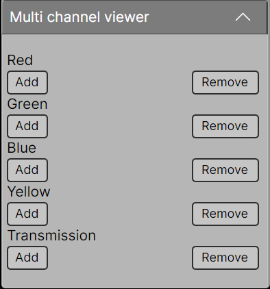
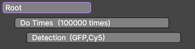
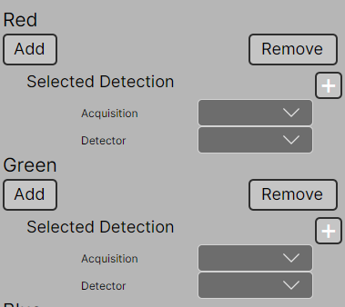
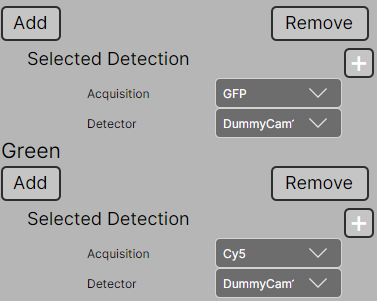
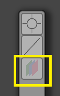
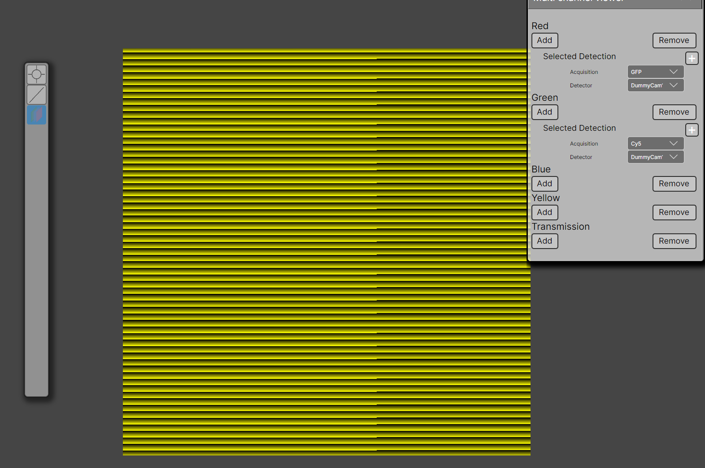

Multi-Channel Display
Imager supports flexible multi-channel visualization. Each Acquisition/Detector pair from a Detection element in the experiment tree can be assigned to a channel in the Multi-Channel view.
Up to 5 channels are available (4 colors + 1 grayscale).
Attaching Data to a Channel
When you first open the Multi-Channel view, you will see an empty panel:

Let’s create an example experiment with 2 acquisition settings: GFP and Cy5. Both are available in the experiment tree:

📝 Note:
You can use the Multi-Channel view in live mode (without storing data) by turning off the Save output? option in the Root element.
Adding Channels
- Press the Add button next to the channels you want to activate.
Example: activate the green and red channels:

- Press the
+button to bind the channel to your experiment. You will be redirected to the experiment tree. - Double-tap the Detection element you want to bind
- Select the corresponding acquisition setting and detectors

Using the Multi-Channel View
- Toggle the Multi-Channel view using the button on the left:

- To clear channels, press Remove next to the corresponding channel.
Once enabled, the multi-channel view will display all assigned channels.
Example for Dummy Cameras:
